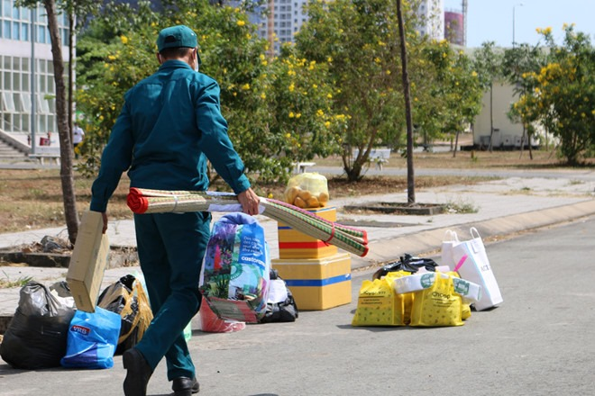

TPHCM vừa ra quyết định trưng dụng Ký túc xá Khu A ĐH Quốc gia làm nơi cách ly tập trung phòng chống dịch bệnh Covid-19.
Sáng ngày 19/3, ban quản lý khu ký túc xá sinh viên Đại học Quốc gia TPHCM vừa đưa thông báo cho biết toàn bộ sinh viên tại đây phải chuyển đồ ra khỏi phòng trong ngày để phục vụ công tác phòng chống dịch bệnh trên thành phố.
“Chúng tôi nhận được thông báo của Ban chỉ đạo phòng, chống dịch Covid-19 TP.HCM về việc chuẩn bị làm nơi cách ly trong trường hợp cần thiết. Ban quản lý sẽ thông báo và hỗ trợ sinh viên dọn đồ ra ngoài, nhằm tạo nơi riêng biệt phòng chống dịch bệnh.” - đại diện Ban Quản lý khu ký túc xá sinh viên Đại học Quốc gia TP.HCM chia sẻ.
Theo đó, khu A KTX Đại học Quốc Gia sẽ trở thành khu cách ly tập trung cho bệnh nhân nghi nhiễm Covid-19, quyết định này được lãnh đạo TPHCM đề nghị vào ngày 29/2.
Ngoài ra, đối với sinh viên ở xa, chưa kịp chuyển đồ, ban quản lý KTX sẽ hỗ trợ di chuyển đồ đạc ở một nơi riêng biệt.
Về những sinh viên, học sinh đi làm thêm hoặc ra ngoài gây khó kiểm soát mùa dịch, trường và ban quản lý KTX có quan điểm khuyến khích những học sinh này nên về quê để đảm bảo an toàn về sức khoẻ.
Theo số liệu của sở Y Tế TPHCM, Khu cách ly của Đại học Quốc gia TPHCM tính tới thời điểm hiện tại đã tiếp nhận trên 1.000 trường học cách ly và còn số này dự kiến sẽ tăng mạnh trong thời gian tới.
Trong thời gian tới, nếu con số người cách ly tăng quá cao, TPHCM có thể sẽ tiếp tục trưng dụng KTX Khu B ĐHQG cùng khu học tập quốc phòng an ninh ĐHQG TPHCM với cùng mục đích trên.
Ông Huỳnh Thành Đạt, Giám đốc Đại học Quốc gia TP.HCM, khẳng định sẵn sàng để TP sử dụng cơ sở vật chất của khu ký túc xá làm khu cách ly tập trung trong trường hợp học sinh chưa thể tới trường trước tình hình dịch Covid-19 diễn biến phức tạp.
Chúng tôi sẽ tiếp tục cập nhật tin tức mới nhất.